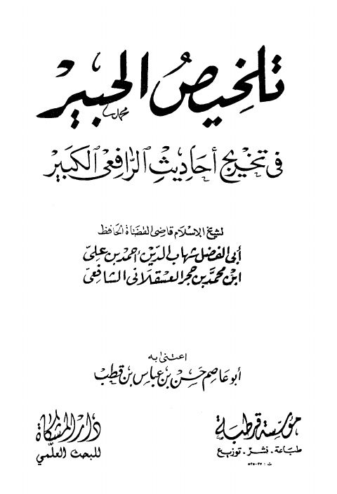

Downloads need an internet connection.
تلخيص الحبير في تخريج أحاديث الرافعي الكبير- مؤسسة قرطبة
Authors: أحمد بن علي بن حجر العسقلاني
Editors: حسن بن عباس بن قطب أبو عاصم
Publishers: مؤسسة قرطبة دار المشكاة
**▫️ العنوان: تلخيص الحبير في تخريج أحاديث الرافعي الكبير- مؤسسة قرطبة** ▪️ المؤلف: #أحمد_بن_علي_بن_حجر_العسقلاني ▫️ المحقق: #حسن_بن_عباس_بن_قطب_أبو_عاصم ▪️ الناشر: #مؤسسة_قرطبة • #دار_المشكاة ▫️ تاريخ النشر: 1416هــ 1995م ▪️ بلد النشر: الجيزة، #مصر ▫️ الطبعة: 1 ▪️ عدد الأجزاء: 4 ▫️ الصفحات: 2144 ▪️ نوع الوعاء: #كتاب ▫️ التصنيف الرئيسي: #الحديث_وعلومه ▪️ التصنيف الفرعي: #تخريج ۪